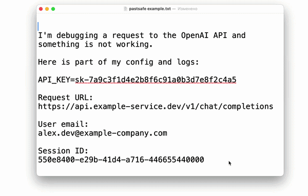

PasteSafe detects sensitive patterns when you paste text into ChatGPT, Gemini or Claude and lets you replace them with masked placeholders before sending.
It helps prevent accidental leaks of API keys, emails, URLs, IDs, phone numbers, amounts and other sensitive values in prompts, shared chats or screenshots.
Available on Chrome Web Store. Runs locally. No tracking.

Paste content into a supported AI chat interface such as ChatGPT, Gemini or Claude.
PasteSafe detects risky patterns locally and shows what can be masked before insertion.
Replace detected values with placeholders and continue your workflow with minimal friction.
Catch secrets before they end up in prompts, screenshots or copied prompt history.
No accounts. No backend. Runs only when you paste into supported sites.
Great for developers, analysts, PMs, founders and anyone using AI tools at work.
PasteSafe was created as a small safety layer for everyday AI workflows. People copy logs, configs, snippets, account data and notes all day long — and sometimes paste them into the wrong place.
AI chats are incredibly useful, but they also make careless pastes more likely. PasteSafe helps reduce that risk by detecting common sensitive patterns on paste and giving you a chance to mask them before they appear in the chat input.
Developers, analysts, PMs, founders, support teams and anyone who regularly uses AI tools while handling semi-sensitive text from real projects.
pastsafe.ext@gmail.com